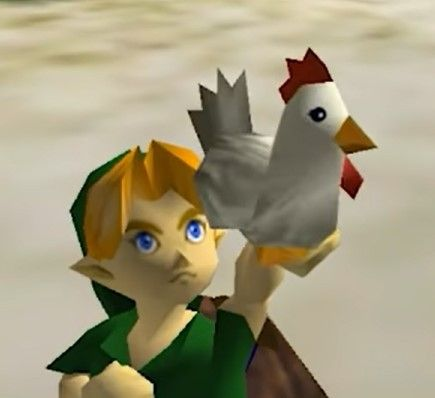

Link
Link es uno de los personajes más icónicos y emblemáticos en la historia de la industria de los videojuegos. Creado por Shigeru Miyamoto y Takashi Tezuka en 1986, es el protagonista silencioso de la legendaria franquicia The Legend of Zelda desarrollada por Nintendo. A lo largo de las distintas entregas de la saga, Link ha sido representado como un joven valiente perteneciente a la raza Hyliana, cuyo destino está entrelazado con la protección del reino de Hyrule y la preservación del equilibrio cósmico frente a las fuerzas oscuras que amenazan con destruirlo.
A diferencia de otros héroes tradicionales de la cultura pop, Link no representa a una sola persona a lo largo de toda la cronología, sino a la reencarnación constante del espíritu del héroe elegido. Poseedor de la Trifuerza del Valor, este guerrero destaca por su maestría en el combate con espada, su extraordinaria destreza con el arco y su asombrosa capacidad para resolver complejos acertijos en mazmorras ancestrales. Su vestimenta verde, su gorro puntiagudo y la mítica Espada Maestra (Master Sword) se han convertido en símbolos reconocibles en todo el mundo.
Una de sus encarnaciones más aclamadas es la conocida como el Héroe del Tiempo (Hero of Time), protagonista de la obra maestra Ocarina of Time lanzada para la consola Nintendo 64. En esta aventura, Link viaja a través del tiempo entre su etapa infantil y su etapa adulta para detener los planes del rey gerudo Ganondorf. Durante su trayecto, explora desde el tranquilo Bosque Kokiri hasta las profundidades de complejos templos elementales, recolectando artefactos mágicos y melodías ancestrales que alteran el flujo del tiempo.
Otro aspecto curioso del personaje es su interacción con la fauna de Hyrule, destacando de manera humorística su constante relación con los Cuckos (las gallinas del juego). Aunque parecen animales inofensivos que Link utiliza para planear cortas distancias, atacar a uno de ellos repetidamente desencadena una temible bandada furiosa que puede acabar rápidamente con la vida del héroe, convirtiéndose en un chiste recurrente y memorable para toda la comunidad de jugadores.
En la cultura popular, Link se distingue además por comunicarse principalmente mediante expresiones faciales y sonidos de acción en lugar de diálogos hablados. Esta decisión de diseño permite que cada jugador conecte de forma directa e identifique su propia personalidad con el personaje mientras explora los vastos e inolvidables mundos de Hyrule, consolidándolo como una leyenda viva de los videojuegos.